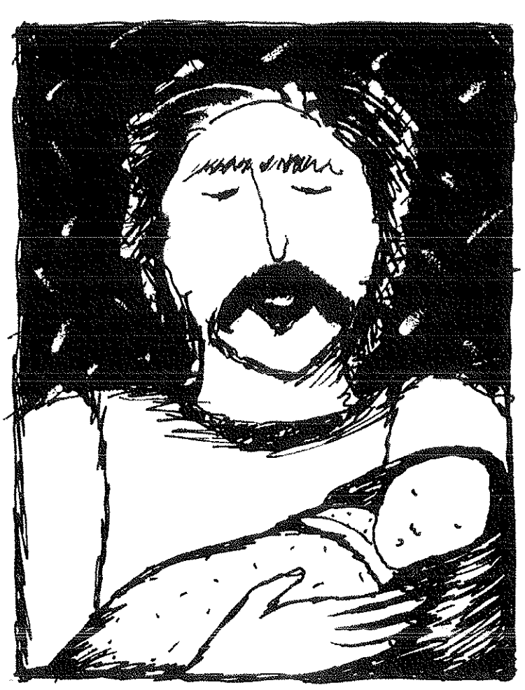
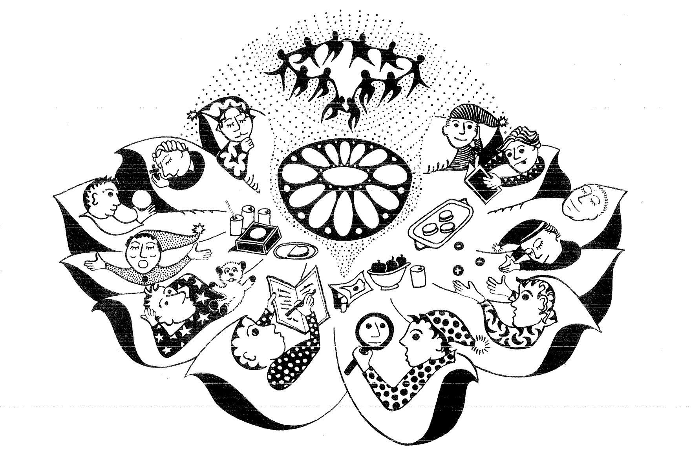
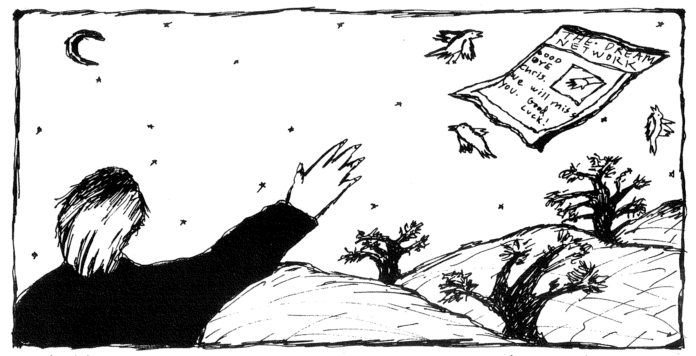

During the summer of '83 I was working in a dirty, crowded pottery studio in downtown Manhattan, trying to get my small business organized. My wife Dale and I had moved to Brooklyn the year before in order to help her rapidly growing illustration career. I missed the home we had built and still owned in New Hampshire where I was more used to the "laid back" attitude of country life. I also missed our 5 year old meditation group where we had frequently shared dreams. In short, I felt disconnected and miserable.
One day, while glazing some teapots and listening to the radio, I heard about the "Self Help Clearinghouse," a service that people could call for information about meditation groups, self-help groups, and other activities. I called that day and asked if there were any dream groups in Manhattan. But I got the number of the Brooklyn Dream Community instead. I met Tom Cowan the director, and a week later found myself in a group of 15 strangers at his apartment in Brooklyn, where I volunteered to share a recent dream. Bill Stimson was leading the group that night, using Montague Ullman's method of group adoption of the dream in a protective environment. Here is the dream I shared:
"I am teaching a baby - a gorgeous infant - how to swim underwater. I begin by teaching him how to hold his breath, then we work our way to progressively more difficult things. He is fat and happy, learns fast, and loves the water. I am astonished at how well he swims underwater. There are other people watching us from the beach - I sense there may be some disapproval of my actions but I ignore their fears. I don't think the baby is my child but am unsure."
As the group, led by Bill, adopted and worked with my dream, I felt a powerful insight that I was about to embark on a new project in my life, one that would involve a spontaneous exploration of my unconscious that would be witnessed and shared by others.
I felt strangely moved and sensitized, and wrote Bill a letter the next day, which he published in his two year old project, The Dream Network Bulletin. Bill began the DNB about the same time that he started The Manhattan Dream Community the winter of '81. He was looking for a way to connect people to one another through the sharing of dreams in groups and everyday experience. His motivations were personal. He was looking for a way to connect with himself, and also for a way to help others connect with each other. For two years, through exhausting bouts of poverty, late night organizing and letter writing, he established a network of individuals interested in dreams throughout the US, Canada, Europe and even the Soviet Union. Soviet parapsychologists met clandestinely and shared their insights through DNB, as did Roman Catholic nuns, psychoanalysts, "shamanistic" dreamers, lucid dreamers, and other varied people. He always printed their names and addresses and hoped that interested people would contact one another, especially to form dream groups. Often they did, and articles, letters, and experiments in group dreaming came into being.
I met with the Brooklyn Dream Community for several months and also kept in touch with Bill and his work. One day he suggested I attend a Dream Leadership Training Workshop with him at Monte Ullman's home north of New York. I called Monte only to find that the workshop was filled. "Does anyone ever drop out?," I asked him. "Extremely rarely," was the reply. "Well if anyone does, please put me at the top of your list!"
That night I had the following dream (excerpted from my journal):
"Dale and I are driving Bill Stimson to Monte's workshop... Monte and his wife are very gracious. We all sit down. I'm aware that Dale and I will only be staying a couple of minutes. I say to the group, 'It's nice to have a home so full of light'... there suddenly seems to be room for Dale and I to attend, because someone cancelled. We decide to stay."
The very next morning, Monte called to say that a woman had dropped out and there would be room for me if I wanted to attend. At this point, I felt I had no choice! I drove Bill up and back each day of the workshop, talking over dreams, plans, and goals for the future. At one point Bill asked, "Why don't you take over the Bulletin?" Touched by his offer, but not feeling ready for such a venture, I was hesitant. I really felt I didn't want it, but I began to have powerful dreams encouraging me to accept it. Here is an excerpt from one of several such dreams:
" ...I sense Yoda's presence. The beauty of being joined through his eyes to an ancient, permanently connected Unconscious Mind that I usually deny. I think of Bill Stimson and how we are so alike in strange but similar ways, that the DNB is his "baby" - that to give it up would be hard for him... I feel a vision of the sharing of dreams realigning our perceptions to take in another, "unseparate" sense of other people, especially the ones we care about. I feel love reawakened. I feel joined to others in a sweet, "sexy", primal intelligence that does not "think" about love but "feels" about love, and reveals loving faces in my mind so gently that I can hardly bear it. I feel at one with these people and my self."
I awoke crying, overwhelmed by the connective power in dream work, and in sharing dreams, so strongly that I felt I had no choice but to accept editorship.
So, for over a year and a half I have buried myself in writing letters, developing a new graphic look for the DNB with computerized typesetting and Dale's beautiful drawings, have enlarged it to 20 pages and 6 issues a year... other people have generously volunteered to help with editing, paste-up, computerizing the subscriptions and a dozen day to day details. As a result, the DNB has more subscribers and more exchanges of dreamwork ideas and experiences. And I still have dreams about the importance of this network.
However, after 8 issues I've become overwhelmed by the worry and work, and am passing on the editorial torch to Bob Van de Castle and Henry Reed, who in the past have offered to help out. The editorial staff and advisory board (as well as the general tone and format) will remain basically the same. I hope Henry and Bob will put their own fire into it... financial needs especially have pulled me in another direction and I have to devote time and energy to my new woodworking job in Claremont, New Hampshire.

I laid awake several nights over this decision and finally received some clarity from some dreams. In one, I was a construction worker at the woodshop where I now work, with a small group of other men. My right arm was covered with silver bracelets which the other men regarded as odd. But I felt a deep sense of belonging and peace. When I awoke I also knew the silver meant prosperity.
Although the DNB has always (usually just barely) paid for itself, there has never been money left over to pay editors and so forth. But a lot of attention and time are required to keep the thing rolling. Perhaps a shared editorship will make it less of a time-consumer. Many of you are aware of Henry's involvement with The Sundance Community Dream Journal and Bob's long involvement with dream study through The University of Virginia at Charlottesville. Both men have been active in dreamwork longer than I have and are also more experienced. Their success will be your success; DNB is ripe for another growth burst.
I never intended to take the Network on permanently, but it truly has been "my baby" for a while, and not easy to give up. I hope to write occasionally on these pages and help out where I can. You can help with letters, articles, resubscriptions and any feedback.

One of my abiding interests in dreams is their relationship to the "Inner Voice" or "that of God in every man" (as the Quakers phrase it). This is because I came into dreamwork from meditation and prayer as well as being a 5 year student of an attitudinal healing workbook called A Course in Miracles. Edgar Cayce remains still today one of the clearest voices for the connection between dreams and God. My prayers led me into dream study because for me it was the clearest way to understand my feelings. It is possible to meditate very hard for years and still not know how one feels. Specifically, dreams made me aware of feelings toward members of my family. Subsequent healings have occurred between me and my father, mother, brother and sister... all attributable indirectly to feelings I came upon through dreams. All the members of my family send me dreams or discuss them over the phone and when we see one another. The family can be the best dream group!
When I was cutting wood with my older brother Pete last winter at his home in northern Maine, we got up around 5 a.m. It was dark and we sat groggily around the stove discussing our dreams. He later said it was one of the best visits he ever had with me. He knew nothing of "technique" but as a voracious reader his whole life his awareness of metaphor was sharp. I can hardly wait to discuss a dream my sister Anne sent me. It turns out that we have a mutually occurring scary dream that I'm certain has a common history that we can explore together. I know it will bring us closer.
The most important attitude I have learned while nursing the DNB is that dreams can be trusted to bear the truth. They will not maliciously fabricate metaphors that are meaningless or random. There is a message and the message has meaning. Generally my eyes are closed to myself and my life is like an iceberg. I am dumbly convinced that the 10% that I can see above the surface is all there is. Until I run aground on the other 90% under water!
There can be a danger to excessive dreamwork if it is an attempt to escape from waking life. If this happens, the dream images will point one back to life responsibilities and grounding activities. At least this was true with me. The more common problem is the lack of attention to inner life.
The personal healings within my family through dreamwork were accompanied by a gradual dissolving of distressing feelings of separation from other people and society in general. Feeling "separate" is one of the severest of social diseases of our time, one that can be helped through group study of the workings of the personal unconscious. Once last year when I was feeling disconnected from others I had a dream filled with images of family and friends, alive and deceased, that was so vivid I awoke literally shaking with joy. The only other place I have experienced such rapture was when I have surrendered my will up in prayer and felt wordless connection to all life... healed, safe, forgiven and whole.
Another element in dreamwork is the accompanying force for change. When I resist the nightly messages it is because I'm afraid to change, I want to hang on to my little neurotic securities. My ego does not go happily into sleep. I drag it there. In the hypnogogic stage before early sleep, conscious thought is released as another level of the mind steps forth. In my way of looking at things, that's where God speaks to me. My problem is that every night my timid definition of God is shattered once again. "How could a loving God give me such awful images?" "Why can't God be straightforward instead of metaphorical and speak verbally instead of in images?" I don't know. I only know that... [TO BE CONTINUED... MISSING PAGE NEEDS RESCANNING!]